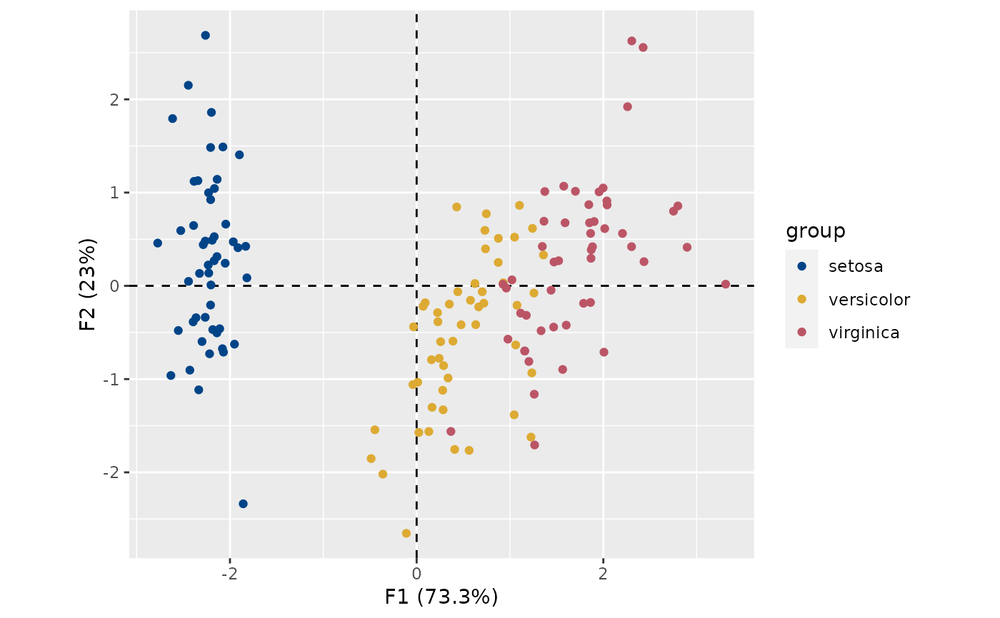
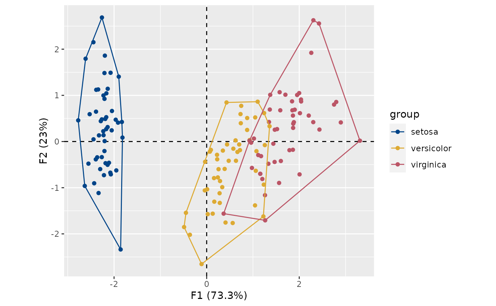

wrap_hull()computes convex hull of a set of observations.
Usage
wrap_hull(x, ...)
stat_hull(
mapping = NULL,
data = NULL,
geom = "polygon",
position = "identity",
na.rm = FALSE,
show.legend = NA,
inherit.aes = TRUE,
...
)
# S4 method for MultivariateAnalysis
wrap_hull(x, margin = 1, axes = c(1, 2), group = NULL)
# S4 method for BootstrapPCA
wrap_hull(x, axes = c(1, 2))Arguments
- x
An object from which to wrap observations (a
CAorPCAobject).- ...
Currently not used.
- mapping
Set of aesthetic mappings created by
aes(). If specified andinherit.aes = TRUE(the default), it is combined with the default mapping at the top level of the plot. You must supplymappingif there is no plot mapping.- data
The data to be displayed in this layer. There are three options:
If
NULL, the default, the data is inherited from the plot data as specified in the call toggplot().A
data.frame, or other object, will override the plot data. All objects will be fortified to produce a data frame. Seefortify()for which variables will be created.A
functionwill be called with a single argument, the plot data. The return value must be adata.frame, and will be used as the layer data. Afunctioncan be created from aformula(e.g.~ head(.x, 10)).- geom
The geometric object to use to display the data, either as a
ggprotoGeomsubclass or as a string naming the geom stripped of thegeom_prefix (e.g."point"rather than"geom_point")- position
Position adjustment, either as a string naming the adjustment (e.g.
"jitter"to useposition_jitter), or the result of a call to a position adjustment function. Use the latter if you need to change the settings of the adjustment.- na.rm
A
logicalscalar: should missing values be silently removed? IfFALSE(the ), missing values are removed with a warning.- show.legend
logical. Should this layer be included in the legends?
NA, the default, includes if any aesthetics are mapped.FALSEnever includes, andTRUEalways includes. It can also be a named logical vector to finely select the aesthetics to display.- inherit.aes
If
FALSE, overrides the default aesthetics, rather than combining with them. This is most useful for helper functions that define both data and aesthetics and shouldn't inherit behaviour from the default plot specification, e.g.borders().- margin
A length-one
numericvector giving the subscript which the data will be returned:1indicates individuals/rows (the default),2indicates variables/columns.- axes
A length-two
numericvector giving the dimensions to be for which to compute results.- group
A vector specifying the group an observation belongs to.
Value
stat_hull()return aggplot2::layer().wrap_hull()return adata.frameof envelope principal coordinates. An extra column namedgroupis added specifying the group an observation belongs to.
See also
Other plot methods:
biplot(),
plot_contributions(),
plot_coordinates,
plot_eigenvalues
Examples
## Load data
data("iris")
## Compute principal components analysis
X <- pca(iris, scale = TRUE)
#> 1 qualitative variable was removed: Species.
## Plot results
plot_rows(X, colour = "group", group = iris$Species) +
khroma::scale_colour_highcontrast()

## Convex hull coordinates
hulls <- wrap_hull(X, group = iris$Species)
head(hulls)
#> F1 F2 group
#> setosa.32 -1.831595 0.42369507 setosa
#> setosa.24 -1.818670 0.08555853 setosa
#> setosa.42 -1.858122 -2.33741516 setosa
#> setosa.14 -2.633101 -0.96150673 setosa
#> setosa.23 -2.774345 0.45834367 setosa
#> setosa.33 -2.614948 1.79357586 setosa
## Plot with convex hulls
plot_rows(X, colour = "group", group = iris$Species) +
stat_hull(geom = "path") +
khroma::scale_colour_highcontrast()
